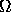
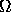

Let  be the scene under consideration.
be the scene under consideration.  represents the
depth value of the scene at the point
represents the
depth value of the scene at the point  , and
, and  represents
a point on the 2D lattice of size
( where ; 
is an integer, and
represents
a point on the 2D lattice of size
( where ; 
is an integer, and  ).
Let , be the 2D intensity images
of the scene
).
Let , be the 2D intensity images
of the scene  , obtained by the left and the right disparate
camera respectively.
The problem of stereo vision is to estimate given the camera
geometry,
, obtained by the left and the right disparate
camera respectively.
The problem of stereo vision is to estimate given the camera
geometry,  and
and  for .
Since the camera geometry is not available, in our formulation we consider
the estimation of the disparity .
for .
Since the camera geometry is not available, in our formulation we consider
the estimation of the disparity .